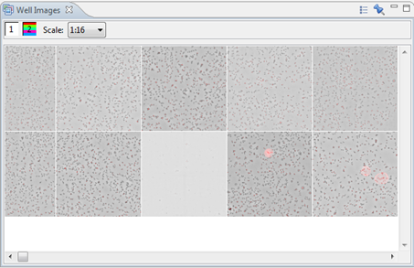

The Well Images will show all the well images of one or more selected wells, e.g. from a selection in a Query Result View (see Query Framework) or from a selection in any well level chart.
These are the functional buttons:
Open a settings window so you can change:
|
|
| "Pin" or "Freeze" view so it will no longer receive selections from other views. |
You can also filter the shown channels by clicking on them. A hidden channel has a red circle with a dash through it over the channel number. Also see the Well Image View.
To open the Subwell Images:
- Right-click on an experiment > Show Well Images
- Go to Window > Show View > Other > Image > Well Images

Note: You can use your scroll wheel to easily zoom in or out.
From this view, you can select (with the mouse) a number of images. Corresponding wells will be highlighted in all other views.
Tip: If you make a selection in a well or subwell chart, the well images view will show all the source well images that contain selected cells. From there, clicking on a well will show the image in the Well Image View: